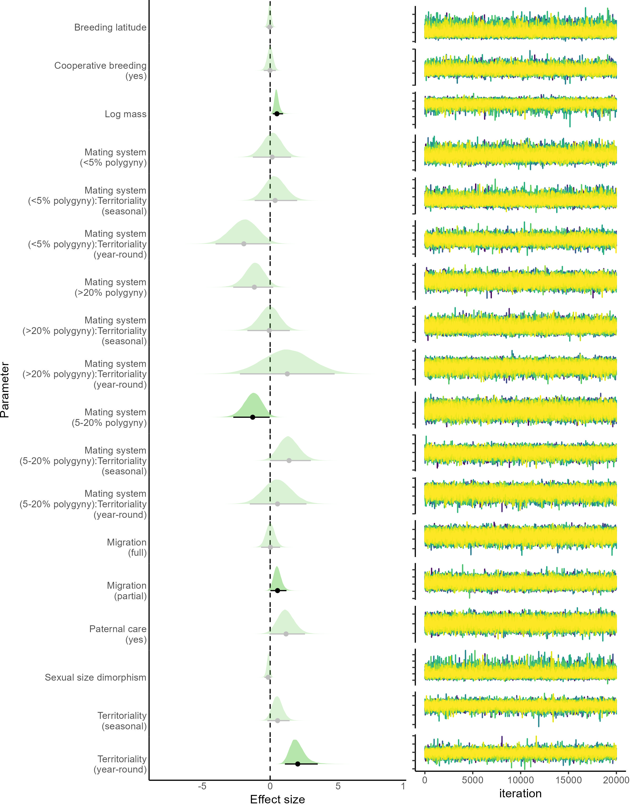

flowchart A[Read data] --> B(Format data) B --> C(Graphs) C --> D(Statistical analysis) D --> E(Model summary) style A fill:#44015466 style B fill:#3E4A894D style C fill:#26828E4D style D fill:#6DCD594D
Statistic analysis
Female song evolution in songbirds
Purpose
- Run phylogenetic regression models on female song evolution
Report overview
- Run brms models
- Results
- Predation models
- Dale data models
- Duet models
- [Posterior predictive checks]
- Takeaways
Analysis flowchart
Load packages
Code
# knitr is require for creating html/pdf/word reports formatR is
# used for soft-wrapping code
# install/ load packages
sketchy::load_packages(packages = c("knitr", "formatR", "brms", "rstan",
"rstanarm", "rstantools", "brmsish"))
source("~/Dropbox/R_package_testing/brmsish/R/read_summary.R")
source("~/Dropbox/R_package_testing/brmsish/R/helpers.R")
source("~/Dropbox/R_package_testing/brmsish/R/extended_summary.R")1 Read trees
Code
trees <- read.nexus("./tree_hacket_allOTUs/output.nex")
trees <- trees[1:25]2 Run brms models
Phylogenetic mixed models of occurrance and elab with natural history traits (predation)
Code
#### PREDATION RATE BRMS MODELS #
set.seed(123)
parallel <- 15
thin <- 100
### Present/absent running on a population of trees
df_pred <- readRDS("M-FsongOrdinal&AllNatHist_ForFinalAnalysis_v4_pred.RDS")
prsabs_pred_multibrm <- phylogenetic_uncertainty(formula = prs_abs ~
DPR + (1 | gr(tip.labels, cov = A)), data = df_pred, phylos = prep_tree(trees,
spp = df_pred$tip.labels), family = bernoulli(link = "logit"),
chains = 1, cores = 1, iter = 20000, prior = priors, control = list(adapt_delta = 0.99,
max_treedepth = 15), parallel = parallel, init = 0, thin = thin,
model.name = "prsabs_pred_multibrm", save.model = TRUE, single.model = FALSE,
path = "./models")
### OCCURRENCE running on a population of trees
df_pred_occ <- readRDS("M-FsongOrdinal&AllNatHist_ForFinalAnalysis_v4_pred_occ.RDS")
occ_pred_multibrm <- phylogenetic_uncertainty(formula = occ ~ DPR +
(1 | gr(tip.labels, cov = A)), data = df_pred_occ, phylos = prep_tree(trees,
spp = df_pred_occ$tip.labels), family = cumulative("probit"),
chains = 1, cores = 1, iter = 15000, prior = priors, control = list(adapt_delta = 0.99,
max_treedepth = 15), parallel = parallel, init = 0, thin = thin,
model.name = "occ_pred_multibrm", save.model = TRUE, single.model = FALSE,
path = "./models")
### ELABORATION running on a population of trees
df_pred_elb <- readRDS("M-FsongOrdinal&AllNatHist_ForFinalAnalysis_v4_pred_elb.RDS")
elb_pred_multibrm <- phylogenetic_uncertainty(formula = elb ~ DPR +
(1 | gr(tip.labels, cov = A)), data = df_pred_elb, phylos = prep_tree(trees,
spp = df_pred_elb$tip.labels), family = cumulative("probit"),
chains = 1, cores = 1, iter = 14000, prior = priors, control = list(adapt_delta = 0.99,
max_treedepth = 15), parallel = parallel, init = 0, thin = thin,
model.name = "elb_pred_multibrm", save.model = TRUE, single.model = FALSE,
path = "./models")
### SONG LENGTH running on a population of trees
df_pred_len <- readRDS("M-FsongOrdinal&AllNatHist_ForFinalAnalysis_v4_pred_len.RDS")
len_pred_multibrm <- phylogenetic_uncertainty(formula = len ~ DPR +
(1 | gr(tip.labels, cov = A)), data = df_pred_len, phylos = prep_tree(trees,
spp = df_pred_len$tip.labels), family = cumulative("probit"),
chains = 1, cores = 1, iter = 15000, prior = priors, control = list(adapt_delta = 0.99,
max_treedepth = 15), parallel = parallel, init = 0, thin = thin,
model.name = "len_pred_multibrm", save.model = TRUE, single.model = FALSE,
path = "./models")Phylogenetic mixed models - ORIGINAL FULL MODELS (Dale)
Code
iter <- 10000
set.seed(123)
parallel <- 5
thin <- 100
### Present/absent
df_prsabs <- readRDS("M-FsongOrdinal&AllNatHist_ForFinalAnalysis_v4_prsabs.RDS")
df_prsabs$mating_system <- factor(as.character(df_prsabs$mating_system))
df_prsabs$paternal_care <- factor(as.character(df_prsabs$paternal_care))
df_prsabs$cooperation <- factor(as.character(df_prsabs$cooperation))
df_prsabs$Migratory <- factor(as.character(df_prsabs$Migratory))
df_prsabs$Territory <- factor(as.character(df_prsabs$Territory))
phylogenetic_uncertainty(formula = prs_abs ~ log_CRC_species_mass +
SSD_wing + mating_system + paternal_care + cooperation + Migratory +
Territory + degrees_from_equator + (1 | gr(tip.labels, cov = A)),
data = df_prsabs, phylos = prep_tree(trees, spp = df_prsabs$tip.labels),
family = bernoulli(link = "logit"), chains = 1, cores = 1, iter = 40000,
prior = priors, control = list(adapt_delta = 0.99, max_treedepth = 15),
parallel = parallel, init = 0, thin = thin, model.name = "prsabs_dale_factor_multibrm",
save.model = TRUE, single.model = FALSE, path = "./models")
phylogenetic_uncertainty(formula = prs_abs ~ log_CRC_species_mass +
SSD_wing + mating_system * paternal_care + cooperation + Migratory +
Territory + degrees_from_equator + (1 | gr(tip.labels, cov = A)),
data = df_prsabs, phylos = prep_tree(trees, spp = df_prsabs$tip.labels),
family = bernoulli(link = "logit"), chains = 1, cores = 1, iter = 40000,
prior = priors, control = list(adapt_delta = 0.99, max_treedepth = 15),
parallel = parallel, init = 0, thin = thin, model.name = "prsabs_dale_intr_multibrm",
save.model = TRUE, single.model = FALSE, path = "./models")
### OCCURRENCE
df_occ <- readRDS("M-FsongOrdinal&AllNatHist_ForFinalAnalysis_v4_occ.RDS")
df_occ$mating_system <- factor(as.character(df_occ$mating_system))
df_occ$paternal_care <- factor(as.character(df_occ$paternal_care))
df_occ$cooperation <- factor(as.character(df_occ$cooperation))
df_occ$Migratory <- factor(as.character(df_occ$Migratory))
df_occ$Territory <- factor(as.character(df_occ$Territory))
is.ordered(df_occ$Migratory)
phylogenetic_uncertainty(formula = occ ~ log_CRC_species_mass + SSD_wing +
mating_system + paternal_care + cooperation + Migratory + Territory +
degrees_from_equator + (1 | gr(tip.labels, cov = A)), data = df_occ,
phylos = prep_tree(trees, spp = df_occ$tip.labels), family = cumulative("probit"),
chains = 1, cores = 1, iter = 18000, prior = priors, parallel = parallel,
init = 0, thin = thin, model.name = "occ_dale_factor_multibrm",
save.model = TRUE, single.model = FALSE, path = "./models")
phylogenetic_uncertainty(formula = occ ~ log_CRC_species_mass + SSD_wing +
mating_system * paternal_care + cooperation + Migratory + Territory +
degrees_from_equator + (1 | gr(tip.labels, cov = A)), data = df_occ,
phylos = prep_tree(trees, spp = df_occ$tip.labels), family = cumulative("probit"),
chains = 1, cores = 1, iter = 18000, prior = priors, parallel = parallel,
init = 0, thin = thin, model.name = "occ_dale_intr_multibrm",
save.model = TRUE, single.model = FALSE, path = "./models")
### ELABORATION
df_elb <- readRDS("M-FsongOrdinal&AllNatHist_ForFinalAnalysis_v4_elb.RDS")
df_elb$mating_system <- factor(as.character(df_elb$mating_system))
df_elb$paternal_care <- factor(as.character(df_elb$paternal_care))
df_elb$cooperation <- factor(as.character(df_elb$cooperation))
df_elb$Migratory <- factor(as.character(df_elb$Migratory))
df_elb$Territory <- factor(as.character(df_elb$Territory))
phylogenetic_uncertainty(formula = elb ~ log_CRC_species_mass + SSD_wing +
mating_system + paternal_care + cooperation + Migratory + Territory +
degrees_from_equator + (1 | gr(tip.labels, cov = A)), data = df_elb,
phylos = prep_tree(trees, spp = df_elb$tip.labels), family = cumulative("probit"),
chains = 1, cores = 1, iter = 20000, prior = priors, control = list(adapt_delta = 0.99,
max_treedepth = 12), parallel = parallel, init = 0, thin = thin,
model.name = "elb_dale_factor_multibrm", save.model = TRUE, single.model = FALSE,
path = "./models")
phylogenetic_uncertainty(formula = elb ~ log_CRC_species_mass + SSD_wing +
mating_system * paternal_care + cooperation + Migratory + Territory +
degrees_from_equator + (1 | gr(tip.labels, cov = A)), data = df_elb,
phylos = prep_tree(trees, spp = df_elb$tip.labels), family = cumulative("probit"),
chains = 1, cores = 1, iter = 20000, prior = priors, control = list(adapt_delta = 0.99,
max_treedepth = 12), parallel = parallel, init = 0, thin = thin,
model.name = "elb_dale_intr_multibrm", save.model = TRUE, single.model = FALSE,
path = "./models")
### SONG LENGTH
df_len <- readRDS("M-FsongOrdinal&AllNatHist_ForFinalAnalysis_v4_len.RDS")
df_len$mating_system <- factor(as.character(df_len$mating_system))
df_len$paternal_care <- factor(as.character(df_len$paternal_care))
df_len$cooperation <- factor(as.character(df_len$cooperation))
df_len$Migratory <- factor(as.character(df_len$Migratory))
df_len$Territory <- factor(as.character(df_len$Territory))
phylogenetic_uncertainty(formula = len ~ log_CRC_species_mass + SSD_wing +
mating_system + paternal_care + cooperation + Migratory + Territory +
degrees_from_equator + (1 | gr(tip.labels, cov = A)), data = df_len,
phylos = prep_tree(trees, spp = df_len$tip.labels), family = cumulative("probit"),
chains = 1, cores = 1, iter = 35000, prior = priors, control = list(adapt_delta = 0.99,
max_treedepth = 12), parallel = parallel, init = 0, thin = thin,
model.name = "len_dale_factor_multibrm", save.model = TRUE, single.model = FALSE,
path = "./models")
phylogenetic_uncertainty(formula = len ~ log_CRC_species_mass + SSD_wing +
mating_system * paternal_care + cooperation + Migratory + Territory +
degrees_from_equator + (1 | gr(tip.labels, cov = A)), data = df_len,
phylos = prep_tree(trees, spp = df_len$tip.labels), family = cumulative("probit"),
chains = 1, cores = 1, iter = 35000, prior = priors, control = list(adapt_delta = 0.99,
max_treedepth = 12), parallel = parallel, init = 0, thin = thin,
model.name = "len_dale_intr_multibrm", save.model = TRUE, single.model = FALSE,
path = "./models")Phylogenetic mixed models of female song vs duets (duet)
Code
set.seed(123)
parallel <- 5
thin <- 100
## TOBIAS DUET DATA BRMS MODELS #
df_duet <- readRDS("M-FsongOrdinal&AllNatHist_ForFinalAnalysis_v4_duet.RDS")
phylogenetic_uncertainty(formula = prs_abs ~ Duet + (1 | gr(tip.labels,
cov = A)), data = df_duet, phylos = prep_tree(trees, spp = df_duet$tip.labels),
family = bernoulli(link = "logit"), chains = 1, cores = 1, iter = 25000,
prior = priors, control = list(adapt_delta = 0.99, max_treedepth = 12),
parallel = parallel, init = 0, thin = thin, model.name = "prsabs_duet_multibrm",
save.model = TRUE, single.model = FALSE, path = "./models")
################################################ DUET vs FemSong
################################################ Natural Hist
################################################ MCMCglmm MODELS
################################################ #
df_duet$mating_system <- factor(as.character(df_duet$mating_system))
df_duet$paternal_care <- factor(as.character(df_duet$paternal_care))
df_duet$cooperation <- factor(as.character(df_duet$cooperation))
df_duet$Migratory <- factor(as.character(df_duet$Migratory))
df_duet$Territory <- factor(as.character(df_duet$Territory))
### ORDINAL FEMALE SONG / DUET SCORE
phylogenetic_uncertainty(formula = prs_abs_duet ~ log_CRC_species_mass +
SSD_wing + mating_system + paternal_care + cooperation + Migratory +
Territory + degrees_from_equator + (1 | gr(tip.labels, cov = A)),
data = df_duet, phylos = prep_tree(trees, spp = df_duet$tip.labels),
family = cumulative("probit"), chains = 1, cores = 1, iter = 10000,
prior = priors, control = list(adapt_delta = 0.99, max_treedepth = 12),
parallel = parallel, init = 0, thin = thin, model.name = "prs_abs_duet_factor_multibrm",
save.model = TRUE, single.model = FALSE, path = "./models")
### OCCURRENCE
df_duet_occ <- readRDS("M-FsongOrdinal&AllNatHist_ForFinalAnalysis_v4_duet_occ.RDS")
phylogenetic_uncertainty(formula = occ ~ Duet + (1 | gr(tip.labels,
cov = A)), data = df_duet_occ, phylos = prep_tree(trees, spp = df_duet_occ$tip.labels),
family = cumulative("probit"), chains = 1, cores = 1, iter = 15000,
prior = priors, control = list(adapt_delta = 0.99, max_treedepth = 12),
parallel = parallel, init = 0, thin = thin, model.name = "occ_duet_multibrm",
save.model = TRUE, single.model = FALSE, path = "./models")
### ELABORATION
df_duet_elb <- readRDS("M-FsongOrdinal&AllNatHist_ForFinalAnalysis_v4_duet_elb.RDS")
phylogenetic_uncertainty(formula = elb ~ Duet + (1 | gr(tip.labels,
cov = A)), data = df_duet_elb, phylos = prep_tree(trees, spp = df_duet_elb$tip.labels),
family = cumulative("probit"), chains = 1, cores = 1, iter = 15000,
prior = priors, control = list(adapt_delta = 0.99, max_treedepth = 12),
parallel = parallel, init = 0, thin = thin, model.name = "elb_duet_multibrm",
save.model = TRUE, single.model = FALSE, path = "./models")
### SONG LENGTH
df_duet_len <- readRDS("M-FsongOrdinal&AllNatHist_ForFinalAnalysis_v4_duet_len.RDS")
phylogenetic_uncertainty(formula = len ~ Duet + (1 | gr(tip.labels,
cov = A)), data = df_duet_len, phylos = prep_tree(trees, spp = df_duet_len$tip.labels),
family = cumulative("probit"), chains = 1, cores = 1, iter = 15000,
prior = priors, control = list(adapt_delta = 0.99, max_treedepth = 12),
parallel = parallel, init = 0, thin = thin, model.name = "len_duet_multibrm",
save.model = TRUE, single.model = FALSE, path = "./models")Code
dirs <- list.dirs(path = "/media/m/Expansion/Projects/temporary")
dirs <- dirs[nchar(dirs) > 45]
gsub.pat <- c("b_", "log_CRC_species_mass", "SSD_wing", "degrees_from_equator",
"mating_system1", "mating_system2", "mating_system3", "paternal_care1",
"cooperation1", "Migratory1", "Migratory2", "Territory2", "Territory3",
"DPR")
gsub.rep <- c("", "Log mass", "Sexual size dimorphism", "Breeding latitude",
"Mating system\n(<5% polygyny)", "Mating system\n(5-20% polygyny)",
"Mating system\n(>20% polygyny)", "Paternal care\n(yes)", "Cooperative breeding\n(yes)",
"Migration\n(partial)", "Migration\n(full)", "Territoriality\n(seasonal)",
"Territoriality\n(year-round)", "Daily nest\npredation rate")
for (i in dirs) combine_model_rds(path = i, dest.path = "./100_tree_models",
overwrite = FALSE, suffix = "-100_combined_model", check_data = FALSE,
summary = TRUE, model.name = basename(gsub("-100_combined_model.RDS",
"", i)), remove.intercepts = TRUE, gsub.pattern = gsub.pat,
gsub.replacement = gsub.rep, highlight = TRUE)2.1 Save model results
Code
models <- list.files(path = "./100_tree_models", pattern = "100_combined_model.RDS$",
full.names = TRUE)
gsub.pat <- c("b_", "log_CRC_species_mass", "SSD_wing", "degrees_from_equator",
"mating_system1", "mating_system2", "mating_system3", "paternal_care1",
"cooperation1", "Migratory1", "Migratory2", "Territory2", "Territory3",
"DPR")
gsub.rep <- c("", "Log mass", "Sexual size dimorphism", "Breeding latitude",
"Mating system\n(<5% polygyny)", "Mating system\n(5-20% polygyny)",
"Mating system\n(>20% polygyny)", "Paternal care\n(yes)", "Cooperative breeding\n(yes)",
"Migration\n(partial)", "Migration\n(full)", "Territoriality\n(seasonal)",
"Territoriality\n(year-round)", "Daily nest\npredation rate")
for (i in models) {
print(i)
html_summary(read.file = i, model.name = basename(gsub("-100_combined_model.RDS",
"", i)), remove.intercepts = TRUE, dest.path = "./100_tree_models",
save = TRUE, gsub.pattern = gsub.pat, gsub.replacement = gsub.rep,
highlight = TRUE)
}3 Results
3.1 Predation
Code
dirs <- list.dirs("./", full.names = FALSE)
dirs <- dirs[-1]
pred_dirs <- grep("pred", dirs, value = TRUE)
for (i in pred_dirs) read_summary(paste0("./", i), highlight = TRUE,
relative.path = TRUE)3.2 elb_pred_multibrm
| priors | formula | iterations | chains | thinning | warmup | diverg_transitions | rhats > 1.05 | min_bulk_ESS | min_tail_ESS | seed | |
|---|---|---|---|---|---|---|---|---|---|---|---|
| 1 | Intercept-student_t(3, 0, 2.5) b-normal(0, 2) sd-student_t(3, 0, 2.5) | elb ~ DPR + (1 | gr(tip.labels, cov = A)) | 14000 | 100 | 1 | 7000 | 2093 (0.00299%) | 0 | 9264.691 | 3277.452 | 365633745 |
| Estimate | l-95% CI | u-95% CI | Rhat | Bulk_ESS | Tail_ESS | |
|---|---|---|---|---|---|---|
| Daily nest predation rate | 0.013 | -0.26 | 0.278 | 1.008 | 9264.691 | 3277.452 |
3.3 len_pred_multibrm
| priors | formula | iterations | chains | thinning | warmup | diverg_transitions | rhats > 1.05 | min_bulk_ESS | min_tail_ESS | seed | |
|---|---|---|---|---|---|---|---|---|---|---|---|
| 1 | Intercept-student_t(3, 0, 2.5) b-normal(0, 2) sd-student_t(3, 0, 2.5) | len ~ DPR + (1 | gr(tip.labels, cov = A)) | 15000 | 100 | 1 | 7500 | 1288 (0.00171733333333333%) | 0 | 13223.94 | 3463.049 | 1691543030 |
| Estimate | l-95% CI | u-95% CI | Rhat | Bulk_ESS | Tail_ESS | |
|---|---|---|---|---|---|---|
| Daily nest predation rate | -0.18 | -1.128 | 0.484 | 1.025 | 13223.94 | 3463.049 |
3.4 occ_pred_multibrm
| priors | formula | iterations | chains | thinning | warmup | diverg_transitions | rhats > 1.05 | min_bulk_ESS | min_tail_ESS | seed | |
|---|---|---|---|---|---|---|---|---|---|---|---|
| 1 | Intercept-student_t(3, 0, 2.5) b-normal(0, 2) sd-student_t(3, 0, 2.5) | occ ~ DPR + (1 | gr(tip.labels, cov = A)) | 15000 | 100 | 1 | 7500 | 7 (9.33333333333333e-06%) | 0 | 22273.38 | 14311.53 | 100496758 |
| Estimate | l-95% CI | u-95% CI | Rhat | Bulk_ESS | Tail_ESS | |
|---|---|---|---|---|---|---|
| Daily nest predation rate | 0.057 | -0.289 | 0.435 | 1.005 | 22273.38 | 14311.53 |
3.5 prsabs_pred_multibrm
| priors | formula | iterations | chains | thinning | warmup | diverg_transitions | rhats > 1.05 | min_bulk_ESS | min_tail_ESS | seed | |
|---|---|---|---|---|---|---|---|---|---|---|---|
| 1 | Intercept-student_t(3, 0, 2.5) b-normal(0, 2) sd-student_t(3, 0, 2.5) | prs_abs ~ DPR + (1 | gr(tip.labels, cov = A)) | 20000 | 100 | 1 | 10000 | 39 (3.9e-05%) | 0 | 37959.98 | 21439.6 | 1673048412 |
| Estimate | l-95% CI | u-95% CI | Rhat | Bulk_ESS | Tail_ESS | |
|---|---|---|---|---|---|---|
| Daily nest predation rate | -0.274 | -1.57 | 0.761 | 1.006 | 37959.98 | 21439.6 |
3.6 Dale
Code
dale_dirs <- grep("dale", dirs, value = TRUE)
for (i in dale_dirs) read_summary(paste0("./", i), highlight = TRUE,
relative.path = TRUE)3.7 elb_dale_factor_multibrm
| priors | formula | iterations | chains | thinning | warmup | diverg_transitions | rhats > 1.05 | min_bulk_ESS | min_tail_ESS | seed | |
|---|---|---|---|---|---|---|---|---|---|---|---|
| 1 | Intercept-student_t(3, 0, 2.5) b-normal(0, 2) sd-student_t(3, 0, 2.5) | elb ~ log_CRC_species_mass + SSD_wing + mating_system + paternal_care + cooperation + Migratory + Territory + degrees_from_equator + (1 | gr(tip.labels, cov = A)) | 20000 | 100 | 1 | 10000 | 0 (0%) | 0 | 1256.247 | 1664.828 | 593844420 |
| Estimate | l-95% CI | u-95% CI | Rhat | Bulk_ESS | Tail_ESS | |
|---|---|---|---|---|---|---|
| Log mass | 0.446 | 0.188 | 0.775 | 1.045 | 1256.247 | 2040.413 |
| Sexual size dimorphism | -0.128 | -0.355 | 0.077 | 1.016 | 3392.530 | 5822.416 |
| Mating system ( | 0.197 | -0.385 | 0.801 | 1.008 | 7552.121 | 12573.944 |
| Mating system (5-20% polygyny) | -0.261 | -0.871 | 0.311 | 1.007 | 8623.840 | 11680.711 |
| Mating system (>20% polygyny) | -0.971 | -2.070 | 0.005 | 1.014 | 3898.025 | 5348.060 |
| Paternal care (yes) | 1.026 | -0.025 | 2.165 | 1.02 | 2750.407 | 6323.422 |
| Cooperative breeding (yes) | 0.038 | -0.354 | 0.423 | 1.007 | 9274.961 | 24234.421 |
| Migration (partial) | 0.452 | -0.015 | 0.983 | 1.017 | 3215.722 | 4477.158 |
| Migration (full) | 0.079 | -0.521 | 0.711 | 1.009 | 6584.733 | 11637.308 |
| Territoriality (seasonal) | 0.574 | -0.036 | 1.259 | 1.014 | 3959.360 | 5232.417 |
| Territoriality (year-round) | 1.799 | 1.063 | 2.772 | 1.043 | 1317.968 | 1664.828 |
| Breeding latitude | -0.030 | -0.252 | 0.186 | 1.015 | 3818.361 | 8882.002 |
3.8 elb_dale_intr_multibrm
| priors | formula | iterations | chains | thinning | warmup | diverg_transitions | rhats > 1.05 | min_bulk_ESS | min_tail_ESS | seed | |
|---|---|---|---|---|---|---|---|---|---|---|---|
| 1 | Intercept-student_t(3, 0, 2.5) b-normal(0, 2) sd-student_t(3, 0, 2.5) | elb ~ log_CRC_species_mass + SSD_wing + mating_system * paternal_care + cooperation + Migratory + Territory + degrees_from_equator + (1 | gr(tip.labels, cov = A)) | 20000 | 100 | 1 | 10000 | 0 (0%) | 0 | 1206.1 | 1477.375 | 593844420 |
| Estimate | l-95% CI | u-95% CI | Rhat | Bulk_ESS | Tail_ESS | |
|---|---|---|---|---|---|---|
| Log mass | 0.445 | 0.182 | 0.785 | 1.046 | 1206.100 | 1899.959 |
| Sexual size dimorphism | -0.129 | -0.361 | 0.079 | 1.018 | 3102.527 | 5064.519 |
| Mating system ( | 0.101 | -2.685 | 2.896 | 1 | 837405.273 | 731476.401 |
| Mating system (5-20% polygyny) | -1.146 | -3.451 | 0.998 | 1.001 | 177772.025 | 689630.615 |
| Mating system (>20% polygyny) | -0.743 | -2.261 | 0.711 | 1.015 | 3718.770 | 7695.796 |
| Paternal care (yes) | 1.146 | -0.136 | 2.537 | 1.026 | 2092.898 | 5757.868 |
| Cooperative breeding (yes) | 0.036 | -0.363 | 0.426 | 1.007 | 8762.128 | 20900.166 |
| Migration (partial) | 0.474 | 0.000 | 1.018 | 1.019 | 2950.885 | 4036.491 |
| Migration (full) | 0.080 | -0.529 | 0.721 | 1.009 | 6260.511 | 11888.874 |
| Territoriality (seasonal) | 0.598 | -0.021 | 1.300 | 1.015 | 3706.165 | 4820.435 |
| Territoriality (year-round) | 1.839 | 1.087 | 2.848 | 1.047 | 1210.508 | 1477.375 |
| Breeding latitude | -0.028 | -0.253 | 0.192 | 1.015 | 3729.276 | 8713.824 |
| Mating system ( | 0.104 | -2.690 | 2.892 | 1 | 837870.124 | 732216.743 |
| Mating system (5-20% polygyny):Paternal care (yes) | 0.917 | -1.258 | 3.234 | 1.001 | 624833.738 | 688370.052 |
| Mating system (>20% polygyny):Paternal care (yes) | -0.494 | -2.329 | 1.266 | 1.009 | 6780.773 | 21217.014 |
3.9 elb_dale_intr_terr_multibrm
| priors | formula | iterations | chains | thinning | warmup | diverg_transitions | rhats > 1.05 | min_bulk_ESS | min_tail_ESS | seed | |
|---|---|---|---|---|---|---|---|---|---|---|---|
| 1 | Intercept-student_t(3, 0, 2.5) b-normal(0, 2) sd-student_t(3, 0, 2.5) | elb ~ log_CRC_species_mass + SSD_wing + mating_system * Territory + paternal_care + cooperation + Migratory + degrees_from_equator + (1 | gr(tip.labels, cov = A)) | 20000 | 100 | 1 | 10000 | 0 (0%) | 2 | 701.718 | 1002.534 | 1673048412 |
| Estimate | l-95% CI | u-95% CI | Rhat | Bulk_ESS | Tail_ESS | |
|---|---|---|---|---|---|---|
| Log mass | 0.499 | 0.195 | 0.950 | 1.069 | 829.155 | 1229.213 |
| Sexual size dimorphism | -0.141 | -0.419 | 0.091 | 1.025 | 2152.221 | 2586.364 |
| Mating system ( | 0.149 | -1.271 | 1.535 | 1.003 | 39516.466 | 50002.081 |
| Mating system (5-20% polygyny) | -1.286 | -2.712 | -0.035 | 1.019 | 3013.420 | 5327.243 |
| Mating system (>20% polygyny) | -1.164 | -2.720 | 0.226 | 1.016 | 3494.023 | 4511.087 |
| Territoriality (seasonal) | 0.549 | -0.206 | 1.432 | 1.02 | 2845.508 | 3222.227 |
| Territoriality (year-round) | 2.032 | 1.088 | 3.505 | 1.083 | 701.718 | 1002.534 |
| Paternal care (yes) | 1.171 | -0.047 | 2.566 | 1.032 | 1741.010 | 3505.150 |
| Cooperative breeding (yes) | -0.010 | -0.471 | 0.422 | 1.01 | 5449.695 | 6386.709 |
| Migration (partial) | 0.545 | 0.019 | 1.202 | 1.032 | 1725.503 | 2531.130 |
| Migration (full) | 0.020 | -0.665 | 0.736 | 1.011 | 5099.146 | 7690.486 |
| Breeding latitude | -0.032 | -0.290 | 0.215 | 1.021 | 2681.445 | 4710.469 |
| Mating system ( | 0.367 | -1.136 | 1.989 | 1.011 | 5725.949 | 8174.699 |
| Mating system (5-20% polygyny):Territoriality (seasonal) | 1.394 | -0.011 | 2.997 | 1.021 | 2651.401 | 5188.871 |
| Mating system (>20% polygyny):Territoriality (seasonal) | -0.068 | -1.674 | 1.450 | 1.005 | 12610.110 | 9947.481 |
| Mating system ( | -1.936 | -4.021 | 0.028 | 1.01 | 5858.694 | 9337.831 |
| Mating system (5-20% polygyny):Territoriality (year-round) | 0.543 | -1.498 | 2.672 | 1.005 | 13747.434 | 18337.978 |
| Mating system (>20% polygyny):Territoriality (year-round) | 1.263 | -2.224 | 4.749 | 1.005 | 14033.782 | 33931.651 |

3.10 len_dale_factor_multibrm
| priors | formula | iterations | chains | thinning | warmup | diverg_transitions | rhats > 1.05 | min_bulk_ESS | min_tail_ESS | seed | |
|---|---|---|---|---|---|---|---|---|---|---|---|
| 1 | Intercept-student_t(3, 0, 2.5) b-normal(0, 2) sd-student_t(3, 0, 2.5) | len ~ log_CRC_species_mass + SSD_wing + mating_system + paternal_care + cooperation + Migratory + Territory + degrees_from_equator + (1 | gr(tip.labels, cov = A)) | 35000 | 100 | 1 | 17500 | 0 (0%) | 0 | 1745.05 | 3049.362 | 891483484 |
| Estimate | l-95% CI | u-95% CI | Rhat | Bulk_ESS | Tail_ESS | |
|---|---|---|---|---|---|---|
| Log mass | 0.390 | 0.163 | 0.661 | 1.031 | 1745.050 | 3049.362 |
| Sexual size dimorphism | -0.114 | -0.320 | 0.076 | 1.017 | 3144.504 | 8108.280 |
| Mating system ( | 0.187 | -0.416 | 0.789 | 1.003 | 25356.269 | 41892.195 |
| Mating system (5-20% polygyny) | 0.056 | -0.518 | 0.625 | 1.004 | 18724.931 | 40850.503 |
| Mating system (>20% polygyny) | -0.130 | -1.050 | 0.770 | 1.004 | 16159.977 | 54496.072 |
| Paternal care (yes) | 1.587 | 0.523 | 2.737 | 1.009 | 6590.088 | 10864.726 |
| Cooperative breeding (yes) | 0.162 | -0.198 | 0.536 | 1.008 | 7506.322 | 11112.903 |
| Migration (partial) | 0.478 | 0.030 | 0.971 | 1.013 | 4440.961 | 5880.459 |
| Migration (full) | -0.027 | -0.626 | 0.571 | 1.004 | 13879.169 | 34937.245 |
| Territoriality (seasonal) | 0.214 | -0.338 | 0.804 | 1.008 | 7278.826 | 12426.114 |
| Territoriality (year-round) | 1.355 | 0.710 | 2.120 | 1.027 | 2058.754 | 3121.882 |
| Breeding latitude | -0.009 | -0.219 | 0.204 | 1.008 | 6936.857 | 21227.355 |
3.11 len_dale_intr_multibrm
| priors | formula | iterations | chains | thinning | warmup | diverg_transitions | rhats > 1.05 | min_bulk_ESS | min_tail_ESS | seed | |
|---|---|---|---|---|---|---|---|---|---|---|---|
| 1 | Intercept-student_t(3, 0, 2.5) b-normal(0, 2) sd-student_t(3, 0, 2.5) | len ~ log_CRC_species_mass + SSD_wing + mating_system * paternal_care + cooperation + Migratory + Territory + degrees_from_equator + (1 | gr(tip.labels, cov = A)) | 35000 | 100 | 1 | 17500 | 0 (0%) | 0 | 1683.368 | 2911.637 | 891483484 |
| Estimate | l-95% CI | u-95% CI | Rhat | Bulk_ESS | Tail_ESS | |
|---|---|---|---|---|---|---|
| Log mass | 0.389 | 0.160 | 0.663 | 1.032 | 1683.368 | 2911.637 |
| Sexual size dimorphism | -0.114 | -0.321 | 0.078 | 1.017 | 3121.097 | 7927.146 |
| Mating system ( | 0.095 | -2.695 | 2.886 | 1 | 1677908.556 | 1289065.552 |
| Mating system (5-20% polygyny) | -0.688 | -3.098 | 1.568 | 1.001 | 1363507.439 | 1236614.155 |
| Mating system (>20% polygyny) | 0.271 | -1.371 | 1.956 | 1.002 | 45260.344 | 570397.018 |
| Paternal care (yes) | 1.884 | 0.337 | 3.543 | 1.006 | 9791.030 | 25796.450 |
| Cooperative breeding (yes) | 0.165 | -0.199 | 0.543 | 1.008 | 7158.362 | 11335.667 |
| Migration (partial) | 0.500 | 0.047 | 1.002 | 1.013 | 4107.873 | 5497.981 |
| Migration (full) | -0.023 | -0.627 | 0.581 | 1.004 | 14117.335 | 37272.959 |
| Territoriality (seasonal) | 0.236 | -0.325 | 0.836 | 1.008 | 7043.124 | 11684.555 |
| Territoriality (year-round) | 1.386 | 0.730 | 2.164 | 1.028 | 1954.286 | 3075.995 |
| Breeding latitude | -0.008 | -0.220 | 0.207 | 1.008 | 6806.334 | 20561.615 |
| Mating system ( | 0.095 | -2.695 | 2.881 | 1 | 1672799.907 | 1297956.377 |
| Mating system (5-20% polygyny):Paternal care (yes) | 0.772 | -1.498 | 3.188 | 1 | 1413905.155 | 1236918.235 |
| Mating system (>20% polygyny):Paternal care (yes) | -0.582 | -2.437 | 1.218 | 1.003 | 30073.098 | 886203.959 |
3.12 len_dale_intr_terr_multibrm
| priors | formula | iterations | chains | thinning | warmup | diverg_transitions | rhats > 1.05 | min_bulk_ESS | min_tail_ESS | seed | |
|---|---|---|---|---|---|---|---|---|---|---|---|
| 1 | Intercept-student_t(3, 0, 2.5) b-normal(0, 2) sd-student_t(3, 0, 2.5) | len ~ log_CRC_species_mass + SSD_wing + mating_system * Territory + paternal_care + cooperation + Migratory + degrees_from_equator + (1 | gr(tip.labels, cov = A)) | 35000 | 100 | 1 | 17500 | 0 (0%) | 1 | 1045.615 | 1281.953 | 1673048412 |
| Estimate | l-95% CI | u-95% CI | Rhat | Bulk_ESS | Tail_ESS | |
|---|---|---|---|---|---|---|
| Log mass | 0.414 | 0.163 | 0.752 | 1.053 | 1045.615 | 1281.953 |
| Sexual size dimorphism | -0.121 | -0.354 | 0.083 | 1.026 | 2119.121 | 2969.789 |
| Mating system ( | 0.223 | -1.173 | 1.575 | 1.003 | 26327.581 | 25159.460 |
| Mating system (5-20% polygyny) | -0.954 | -2.268 | 0.280 | 1.005 | 12960.910 | 16827.650 |
| Mating system (>20% polygyny) | -0.425 | -1.802 | 0.931 | 1.002 | 58614.855 | 55153.077 |
| Territoriality (seasonal) | 0.069 | -0.603 | 0.784 | 1.007 | 7915.217 | 7881.887 |
| Territoriality (year-round) | 1.315 | 0.553 | 2.305 | 1.047 | 1188.526 | 1311.207 |
| Paternal care (yes) | 1.607 | 0.394 | 2.963 | 1.013 | 4139.703 | 5350.382 |
| Cooperative breeding (yes) | 0.157 | -0.228 | 0.567 | 1.012 | 4444.889 | 4223.621 |
| Migration (partial) | 0.527 | 0.042 | 1.103 | 1.028 | 1936.906 | 1890.192 |
| Migration (full) | -0.091 | -0.744 | 0.554 | 1.006 | 10864.874 | 11096.868 |
| Breeding latitude | -0.014 | -0.239 | 0.218 | 1.01 | 5788.914 | 9502.774 |
| Mating system ( | 0.085 | -1.382 | 1.625 | 1.007 | 9143.247 | 11244.467 |
| Mating system (5-20% polygyny):Territoriality (seasonal) | 1.258 | -0.120 | 2.732 | 1.009 | 6196.802 | 8719.448 |
| Mating system (>20% polygyny):Territoriality (seasonal) | 0.259 | -1.132 | 1.622 | 1.003 | 43098.891 | 29750.346 |
| Mating system ( | -0.777 | -2.765 | 1.166 | 1.003 | 19518.340 | 20900.173 |
| Mating system (5-20% polygyny):Territoriality (year-round) | 1.272 | -0.810 | 3.440 | 1.003 | 24653.800 | 25357.779 |
| Mating system (>20% polygyny):Territoriality (year-round) | 0.769 | -2.412 | 3.890 | 1.002 | 32905.182 | 43123.495 |
3.13 occ_dale_factor_multibrm
| priors | formula | iterations | chains | thinning | warmup | diverg_transitions | rhats > 1.05 | min_bulk_ESS | min_tail_ESS | seed | |
|---|---|---|---|---|---|---|---|---|---|---|---|
| 1 | Intercept-student_t(3, 0, 2.5) b-normal(0, 2) sd-student_t(3, 0, 2.5) | occ ~ log_CRC_species_mass + SSD_wing + mating_system + paternal_care + cooperation + Migratory + Territory + degrees_from_equator + (1 | gr(tip.labels, cov = A)) | 18000 | 100 | 1 | 9000 | 0 (0%) | 0 | 1796.143 | 4779.604 | 1673048412 |
| Estimate | l-95% CI | u-95% CI | Rhat | Bulk_ESS | Tail_ESS | |
|---|---|---|---|---|---|---|
| Log mass | 0.490 | 0.258 | 0.752 | 1.03 | 1796.143 | 4779.604 |
| Sexual size dimorphism | -0.110 | -0.316 | 0.086 | 1.018 | 3016.663 | 12434.280 |
| Mating system ( | 0.061 | -0.468 | 0.591 | 1.003 | 24601.561 | 271113.598 |
| Mating system (5-20% polygyny) | -0.074 | -0.593 | 0.440 | 1.006 | 9109.225 | 43387.827 |
| Mating system (>20% polygyny) | -0.565 | -1.434 | 0.280 | 1.006 | 10883.677 | 103422.453 |
| Paternal care (yes) | 1.268 | 0.265 | 2.311 | 1.012 | 4583.322 | 16101.685 |
| Cooperative breeding (yes) | 0.143 | -0.199 | 0.488 | 1.008 | 7462.974 | 22858.880 |
| Migration (partial) | 0.487 | 0.049 | 0.950 | 1.008 | 6841.644 | 26265.494 |
| Migration (full) | 0.262 | -0.289 | 0.831 | 1.007 | 8956.591 | 45834.126 |
| Territoriality (seasonal) | 0.736 | 0.125 | 1.406 | 1.012 | 4969.325 | 14166.884 |
| Territoriality (year-round) | 2.375 | 1.628 | 3.255 | 1.025 | 2196.714 | 5348.981 |
| Breeding latitude | -0.090 | -0.302 | 0.117 | 1.012 | 4614.521 | 16606.558 |
3.14 occ_dale_intr_multibrm
| priors | formula | iterations | chains | thinning | warmup | diverg_transitions | rhats > 1.05 | min_bulk_ESS | min_tail_ESS | seed | |
|---|---|---|---|---|---|---|---|---|---|---|---|
| 1 | Intercept-student_t(3, 0, 2.5) b-normal(0, 2) sd-student_t(3, 0, 2.5) | occ ~ log_CRC_species_mass + SSD_wing + mating_system * paternal_care + cooperation + Migratory + Territory + degrees_from_equator + (1 | gr(tip.labels, cov = A)) | 18000 | 100 | 1 | 9000 | 0 (0%) | 0 | 1806.051 | 4838.144 | 1673048412 |
| Estimate | l-95% CI | u-95% CI | Rhat | Bulk_ESS | Tail_ESS | |
|---|---|---|---|---|---|---|
| Log mass | 0.494 | 0.262 | 0.757 | 1.03 | 1806.051 | 4838.144 |
| Sexual size dimorphism | -0.115 | -0.320 | 0.082 | 1.018 | 3074.441 | 14285.276 |
| Mating system ( | 0.037 | -2.750 | 2.815 | 1 | 1218694.106 | 679507.252 |
| Mating system (5-20% polygyny) | -1.120 | -3.381 | 0.971 | 1.001 | 995575.662 | 671272.054 |
| Mating system (>20% polygyny) | -1.020 | -2.466 | 0.425 | 1.007 | 8587.552 | 50020.953 |
| Paternal care (yes) | 0.934 | -0.335 | 2.251 | 1.017 | 3194.597 | 13119.148 |
| Cooperative breeding (yes) | 0.140 | -0.202 | 0.485 | 1.008 | 7667.304 | 24729.857 |
| Migration (partial) | 0.483 | 0.043 | 0.949 | 1.008 | 7294.533 | 26504.349 |
| Migration (full) | 0.255 | -0.295 | 0.823 | 1.007 | 9190.044 | 42374.866 |
| Territoriality (seasonal) | 0.714 | 0.098 | 1.387 | 1.012 | 4809.471 | 14644.966 |
| Territoriality (year-round) | 2.356 | 1.605 | 3.237 | 1.026 | 2158.745 | 5636.080 |
| Breeding latitude | -0.092 | -0.304 | 0.115 | 1.012 | 4722.510 | 17655.688 |
| Mating system ( | 0.038 | -2.741 | 2.823 | 1 | 1221239.370 | 683735.788 |
| Mating system (5-20% polygyny):Paternal care (yes) | 1.089 | -1.024 | 3.365 | 1.001 | 1014376.152 | 673134.694 |
| Mating system (>20% polygyny):Paternal care (yes) | 0.600 | -1.058 | 2.237 | 1.007 | 8094.528 | 51931.815 |
3.15 occ_dale_intr_terr_multibrm
| priors | formula | iterations | chains | thinning | warmup | diverg_transitions | rhats > 1.05 | min_bulk_ESS | min_tail_ESS | seed | |
|---|---|---|---|---|---|---|---|---|---|---|---|
| 1 | Intercept-student_t(3, 0, 2.5) b-normal(0, 2) sd-student_t(3, 0, 2.5) | occ ~ log_CRC_species_mass + SSD_wing + mating_system * Territory + paternal_care + cooperation + Migratory + degrees_from_equator + (1 | gr(tip.labels, cov = A)) | 18000 | 100 | 1 | 9000 | 0 (0%) | 0 | 1470.495 | 3600.12 | 1673048412 |
| Estimate | l-95% CI | u-95% CI | Rhat | Bulk_ESS | Tail_ESS | |
|---|---|---|---|---|---|---|
| Log mass | 0.526 | 0.274 | 0.819 | 1.037 | 1470.495 | 3600.120 |
| Sexual size dimorphism | -0.119 | -0.340 | 0.090 | 1.02 | 2734.828 | 10667.491 |
| Mating system ( | 0.354 | -1.031 | 1.724 | 1.002 | 77181.511 | 682991.517 |
| Mating system (5-20% polygyny) | -1.473 | -2.751 | -0.275 | 1.007 | 8475.020 | 26880.249 |
| Mating system (>20% polygyny) | -0.983 | -2.390 | 0.374 | 1.005 | 13652.089 | 265728.697 |
| Territoriality (seasonal) | 0.582 | -0.109 | 1.327 | 1.01 | 5991.647 | 19017.049 |
| Territoriality (year-round) | 2.402 | 1.562 | 3.397 | 1.031 | 1781.771 | 4370.974 |
| Paternal care (yes) | 1.223 | 0.085 | 2.424 | 1.017 | 3299.364 | 11760.586 |
| Cooperative breeding (yes) | 0.126 | -0.236 | 0.490 | 1.009 | 5935.942 | 17725.774 |
| Migration (partial) | 0.554 | 0.088 | 1.057 | 1.012 | 4675.982 | 12034.667 |
| Migration (full) | 0.234 | -0.350 | 0.839 | 1.008 | 7758.959 | 33926.356 |
| Breeding latitude | -0.099 | -0.326 | 0.120 | 1.014 | 3870.436 | 11898.902 |
| Mating system ( | -0.169 | -1.621 | 1.304 | 1.002 | 58240.437 | 647609.145 |
| Mating system (5-20% polygyny):Territoriality (seasonal) | 1.758 | 0.432 | 3.172 | 1.01 | 5507.005 | 16215.355 |
| Mating system (>20% polygyny):Territoriality (seasonal) | 0.449 | -1.068 | 1.965 | 1.004 | 16563.185 | 510245.047 |
| Mating system ( | -1.151 | -2.973 | 0.649 | 1.002 | 61317.896 | 662893.512 |
| Mating system (5-20% polygyny):Territoriality (year-round) | 1.040 | -0.885 | 3.018 | 1.002 | 48296.695 | 636060.934 |
| Mating system (>20% polygyny):Territoriality (year-round) | -0.261 | -3.331 | 2.790 | 1.001 | 1047103.722 | 669978.809 |
3.16 prsabs_dale_factor_multibrm
| priors | formula | iterations | chains | thinning | warmup | diverg_transitions | rhats > 1.05 | min_bulk_ESS | min_tail_ESS | seed | |
|---|---|---|---|---|---|---|---|---|---|---|---|
| 1 | Intercept-student_t(3, 0, 2.5) b-normal(0, 2) sd-student_t(3, 0, 2.5) | prs_abs ~ log_CRC_species_mass + SSD_wing + mating_system + paternal_care + cooperation + Migratory + Territory + degrees_from_equator + (1 | gr(tip.labels, cov = A)) | 40000 | 100 | 1 | 20000 | 0 (0%) | 1 | 1015.41 | 2704.702 | 1673048412 |
| Estimate | l-95% CI | u-95% CI | Rhat | Bulk_ESS | Tail_ESS | |
|---|---|---|---|---|---|---|
| Log mass | 1.127 | 0.440 | 2.142 | 1.054 | 1015.410 | 2704.702 |
| Sexual size dimorphism | -0.450 | -1.081 | 0.055 | 1.018 | 2945.051 | 6114.543 |
| mating_system.L | -0.765 | -2.240 | 0.577 | 1.015 | 3621.029 | 7684.639 |
| mating_system.Q | -1.023 | -2.412 | 0.180 | 1.017 | 3158.202 | 6366.314 |
| mating_system.C | -0.047 | -1.238 | 1.151 | 1.006 | 10451.309 | 20271.810 |
| paternal_care.L | 0.839 | -0.704 | 2.477 | 1.03 | 1784.595 | 3921.522 |
| cooperation.L | 0.442 | -0.218 | 1.262 | 1.016 | 3508.333 | 5472.965 |
| Migratory.L | 0.128 | -0.893 | 1.190 | 1.007 | 7905.955 | 15123.195 |
| Migratory.Q | -0.878 | -1.793 | -0.159 | 1.019 | 2776.702 | 5561.879 |
| Territory.L | 3.481 | 1.996 | 5.647 | 1.045 | 1227.152 | 3906.946 |
| Territory.Q | 0.935 | 0.127 | 1.991 | 1.027 | 2036.704 | 3875.090 |
| Breeding latitude | 0.260 | -0.294 | 0.889 | 1.014 | 3996.505 | 7429.979 |
3.17 prsabs_dale_intr_multibrm
| priors | formula | iterations | chains | thinning | warmup | diverg_transitions | rhats > 1.05 | min_bulk_ESS | min_tail_ESS | seed | |
|---|---|---|---|---|---|---|---|---|---|---|---|
| 1 | Intercept-student_t(3, 0, 2.5) b-normal(0, 2) sd-student_t(3, 0, 2.5) | prs_abs ~ log_CRC_species_mass + SSD_wing + mating_system * paternal_care + cooperation + Migratory + Territory + degrees_from_equator + (1 | gr(tip.labels, cov = A)) | 40000 | 100 | 1 | 20000 | 0 (0%) | 1 | 955.128 | 2681.446 | 1673048412 |
| Estimate | l-95% CI | u-95% CI | Rhat | Bulk_ESS | Tail_ESS | |
|---|---|---|---|---|---|---|
| Log mass | 1.172 | 0.445 | 2.266 | 1.058 | 955.128 | 2681.446 |
| Sexual size dimorphism | -0.470 | -1.140 | 0.058 | 1.02 | 2746.819 | 5557.460 |
| mating_system.L | -0.841 | -2.635 | 0.839 | 1.017 | 3219.559 | 8124.136 |
| mating_system.Q | -0.873 | -2.930 | 1.092 | 1.009 | 6643.781 | 15190.260 |
| mating_system.C | -0.046 | -2.169 | 2.066 | 1.001 | 84635.957 | 1374806.758 |
| paternal_care.L | 0.973 | -0.845 | 2.866 | 1.02 | 2646.881 | 6299.745 |
| cooperation.L | 0.468 | -0.221 | 1.339 | 1.017 | 3163.583 | 5293.812 |
| Migratory.L | 0.134 | -0.933 | 1.249 | 1.008 | 7255.483 | 13584.723 |
| Migratory.Q | -0.919 | -1.887 | -0.171 | 1.021 | 2579.011 | 5457.898 |
| Territory.L | 3.625 | 2.051 | 5.920 | 1.049 | 1141.265 | 4043.088 |
| Territory.Q | 0.972 | 0.121 | 2.114 | 1.029 | 1834.331 | 3783.541 |
| Breeding latitude | 0.277 | -0.302 | 0.946 | 1.015 | 3694.504 | 7019.640 |
| mating_system.L:paternal_care.L | -0.074 | -2.296 | 2.120 | 1.011 | 4966.291 | 14098.066 |
| mating_system.Q:paternal_care.L | -0.419 | -3.053 | 2.214 | 1.003 | 27874.412 | 1110234.002 |
| mating_system.C:paternal_care.L | -0.073 | -2.935 | 2.794 | 1.002 | 48686.424 | 1400814.095 |
3.18 prsabs_dale_intr_terr_multibrm
| priors | formula | iterations | chains | thinning | warmup | diverg_transitions | rhats > 1.05 | min_bulk_ESS | min_tail_ESS | seed | |
|---|---|---|---|---|---|---|---|---|---|---|---|
| 1 | Intercept-student_t(3, 0, 2.5) b-normal(0, 2) sd-student_t(3, 0, 2.5) | prs_abs ~ log_CRC_species_mass + SSD_wing + mating_system * Territory + paternal_care + cooperation + Migratory + degrees_from_equator + (1 | gr(tip.labels, cov = A)) | 40000 | 100 | 1 | 20000 | 0 (0%) | 1 | 872.378 | 2444.134 | 1673048412 |
| Estimate | l-95% CI | u-95% CI | Rhat | Bulk_ESS | Tail_ESS | |
|---|---|---|---|---|---|---|
| Log mass | 1.316 | 0.485 | 2.613 | 1.065 | 872.378 | 2444.134 |
| Sexual size dimorphism | -0.527 | -1.330 | 0.069 | 1.026 | 2105.928 | 4245.709 |
| mating_system.L | -1.090 | -3.233 | 0.807 | 1.024 | 2276.254 | 7001.351 |
| mating_system.Q | -0.745 | -2.581 | 0.984 | 1.011 | 4879.199 | 11512.103 |
| mating_system.C | -0.193 | -2.048 | 1.631 | 1.009 | 6420.087 | 16091.479 |
| Territory.L | 3.795 | 1.689 | 6.302 | 1.023 | 2382.778 | 7078.875 |
| Territory.Q | 0.599 | -0.831 | 2.092 | 1.007 | 8674.122 | 13350.076 |
| paternal_care.L | 0.902 | -0.917 | 2.874 | 1.031 | 1730.761 | 3939.825 |
| cooperation.L | 0.519 | -0.253 | 1.523 | 1.02 | 2729.137 | 4563.700 |
| Migratory.L | 0.125 | -1.082 | 1.391 | 1.009 | 6475.507 | 11417.412 |
| Migratory.Q | -1.037 | -2.170 | -0.199 | 1.027 | 1988.378 | 4623.829 |
| Breeding latitude | 0.303 | -0.350 | 1.086 | 1.018 | 3055.662 | 5470.774 |
| mating_system.L:Territory.L | 0.266 | -2.757 | 3.155 | 1.011 | 4800.948 | 14026.343 |
| mating_system.Q:Territory.L | 0.077 | -2.750 | 2.978 | 1.009 | 5983.927 | 16370.683 |
| mating_system.C:Territory.L | -1.228 | -4.289 | 1.803 | 1.006 | 9932.943 | 57655.263 |
| mating_system.L:Territory.Q | -0.182 | -2.451 | 1.926 | 1.015 | 3737.794 | 10333.841 |
| mating_system.Q:Territory.Q | 1.203 | -0.910 | 3.495 | 1.012 | 4457.755 | 10763.256 |
| mating_system.C:Territory.Q | 0.077 | -2.245 | 2.362 | 1.008 | 6788.479 | 16316.807 |
3.19 Duet
Code
duet_dirs <- grep("duet", dirs, value = TRUE)
for (i in duet_dirs) read_summary(paste0("./", i), highlight = TRUE,
relative.path = TRUE)3.20 elb_duet_multibrm
| priors | formula | iterations | chains | thinning | warmup | diverg_transitions | rhats > 1.05 | min_bulk_ESS | min_tail_ESS | seed | |
|---|---|---|---|---|---|---|---|---|---|---|---|
| 1 | Intercept-student_t(3, 0, 2.5) b-normal(0, 2) sd-student_t(3, 0, 2.5) | elb ~ Duet + (1 | gr(tip.labels, cov = A)) | 15000 | 100 | 1 | 7500 | 0 (0%) | 0 | 1683.961 | 4424.104 | 469733964 |
| Estimate | l-95% CI | u-95% CI | Rhat | Bulk_ESS | Tail_ESS | |
|---|---|---|---|---|---|---|
| Duet1 | 1.885 | 1.495 | 2.374 | 1.033 | 1683.961 | 4424.104 |

3.21 len_duet_multibrm
| priors | formula | iterations | chains | thinning | warmup | diverg_transitions | rhats > 1.05 | min_bulk_ESS | min_tail_ESS | seed | |
|---|---|---|---|---|---|---|---|---|---|---|---|
| 1 | Intercept-student_t(3, 0, 2.5) b-normal(0, 2) sd-student_t(3, 0, 2.5) | len ~ Duet + (1 | gr(tip.labels, cov = A)) | 15000 | 100 | 1 | 7500 | 0 (0%) | 0 | 3044.222 | 9093.122 | 986515037 |
| Estimate | l-95% CI | u-95% CI | Rhat | Bulk_ESS | Tail_ESS | |
|---|---|---|---|---|---|---|
| Duet1 | 1.53 | 1.209 | 1.892 | 1.018 | 3044.222 | 9093.122 |

3.22 occ_duet_multibrm
| priors | formula | iterations | chains | thinning | warmup | diverg_transitions | rhats > 1.05 | min_bulk_ESS | min_tail_ESS | seed | |
|---|---|---|---|---|---|---|---|---|---|---|---|
| 1 | Intercept-student_t(3, 0, 2.5) b-normal(0, 2) sd-student_t(3, 0, 2.5) | occ ~ Duet + (1 | gr(tip.labels, cov = A)) | 15000 | 100 | 1 | 7500 | 0 (0%) | 1 | 863.323 | 2905.451 | 1673048412 |
| Estimate | l-95% CI | u-95% CI | Rhat | Bulk_ESS | Tail_ESS | |
|---|---|---|---|---|---|---|
| Duet1 | 2.685 | 2.178 | 3.355 | 1.067 | 863.323 | 2905.451 |
3.23 prs_abs_duet_factor_multibrm
| priors | formula | iterations | chains | thinning | warmup | diverg_transitions | rhats > 1.05 | min_bulk_ESS | min_tail_ESS | seed | |
|---|---|---|---|---|---|---|---|---|---|---|---|
| 1 | Intercept-student_t(3, 0, 2.5) b-normal(0, 2) sd-student_t(3, 0, 2.5) | prs_abs_duet ~ log_CRC_species_mass + SSD_wing + mating_system + paternal_care + cooperation + Migratory + Territory + degrees_from_equator + (1 | gr(tip.labels, cov = A)) | 10000 | 100 | 1 | 5000 | 0 (0%) | 0 | 1142.57 | 2924.285 | 1673048412 |
| Estimate | l-95% CI | u-95% CI | Rhat | Bulk_ESS | Tail_ESS | |
|---|---|---|---|---|---|---|
| Log mass | 0.433 | 0.170 | 0.735 | 1.033 | 1699.839 | 4505.877 |
| Sexual size dimorphism | -0.107 | -0.327 | 0.108 | 1.018 | 3155.403 | 10460.146 |
| Mating system ( | 0.295 | -0.298 | 0.910 | 1.011 | 5350.603 | 14230.835 |
| Mating system (5-20% polygyny) | -0.039 | -0.618 | 0.538 | 1.008 | 7892.878 | 38023.767 |
| Mating system (>20% polygyny) | -0.877 | -1.800 | -0.022 | 1.017 | 3360.094 | 9767.606 |
| Paternal care (yes) | 0.566 | -0.434 | 1.578 | 1.028 | 2006.585 | 8219.801 |
| Cooperative breeding (yes) | 0.022 | -0.352 | 0.409 | 1.011 | 5107.215 | 17370.952 |
| Migration (partial) | 0.377 | -0.091 | 0.873 | 1.011 | 5476.475 | 16653.117 |
| Migration (full) | 0.073 | -0.535 | 0.691 | 1.009 | 6601.172 | 37883.823 |
| Territoriality (seasonal) | 0.530 | -0.092 | 1.196 | 1.012 | 5110.226 | 16287.515 |
| Territoriality (year-round) | 2.925 | 2.092 | 3.972 | 1.05 | 1142.570 | 2924.285 |
| Breeding latitude | -0.075 | -0.310 | 0.156 | 1.015 | 3828.419 | 15404.517 |
3.24 prsabs_duet_multibrm
| priors | formula | iterations | chains | thinning | warmup | diverg_transitions | rhats > 1.05 | min_bulk_ESS | min_tail_ESS | seed | |
|---|---|---|---|---|---|---|---|---|---|---|---|
| 1 | Intercept-student_t(3, 0, 2.5) b-normal(0, 2) sd-student_t(3, 0, 2.5) | prs_abs ~ Duet + (1 | gr(tip.labels, cov = A)) | 25000 | 100 | 1 | 12500 | 0 (0%) | 0 | 11452.05 | 293022.6 | 1673048412 |
| Estimate | l-95% CI | u-95% CI | Rhat | Bulk_ESS | Tail_ESS | |
|---|---|---|---|---|---|---|
| Duet1 | 7.731 | 5.942 | 9.83 | 1.005 | 11452.05 | 293022.6 |
Takeaways
Session information
R version 4.4.1 (2024-06-14)
Platform: x86_64-pc-linux-gnu
Running under: Ubuntu 22.04.4 LTS
Matrix products: default
BLAS: /usr/lib/x86_64-linux-gnu/blas/libblas.so.3.10.0
LAPACK: /usr/lib/x86_64-linux-gnu/lapack/liblapack.so.3.10.0
locale:
[1] LC_CTYPE=en_US.UTF-8 LC_NUMERIC=C
[3] LC_TIME=es_CR.UTF-8 LC_COLLATE=en_US.UTF-8
[5] LC_MONETARY=es_CR.UTF-8 LC_MESSAGES=en_US.UTF-8
[7] LC_PAPER=es_CR.UTF-8 LC_NAME=C
[9] LC_ADDRESS=C LC_TELEPHONE=C
[11] LC_MEASUREMENT=es_CR.UTF-8 LC_IDENTIFICATION=C
time zone: America/Costa_Rica
tzcode source: system (glibc)
attached base packages:
[1] stats graphics grDevices utils datasets methods base
other attached packages:
[1] brmsish_1.0.0 rstantools_2.4.0 rstanarm_2.32.1
[4] rstan_2.32.6 StanHeaders_2.32.10 brms_2.21.0
[7] Rcpp_1.0.13 formatR_1.14 knitr_1.48
loaded via a namespace (and not attached):
[1] pbapply_1.7-2 gridExtra_2.3 remotes_2.5.0
[4] inline_0.3.19 sandwich_3.1-0 rlang_1.1.4
[7] magrittr_2.0.3 multcomp_1.4-25 matrixStats_1.3.0
[10] compiler_4.4.1 loo_2.8.0 systemfonts_1.1.0
[13] vctrs_0.6.5 reshape2_1.4.4 stringr_1.5.1
[16] arrayhelpers_1.1-0 pkgconfig_2.0.3 crayon_1.5.3
[19] fastmap_1.2.0 backports_1.5.0 utf8_1.2.4
[22] threejs_0.3.3 promises_1.3.0 rmarkdown_2.27
[25] markdown_1.13 nloptr_2.1.1 purrr_1.0.2
[28] xfun_0.46 jsonlite_1.8.8 later_1.3.2
[31] tidybayes_3.0.6 parallel_4.4.1 R6_2.5.1
[34] dygraphs_1.1.1.6 stringi_1.8.4 boot_1.3-30
[37] estimability_1.5.1 zoo_1.8-12 base64enc_0.1-3
[40] bayesplot_1.11.1 httpuv_1.6.15 Matrix_1.7-0
[43] splines_4.4.1 igraph_2.0.3 tidyselect_1.2.1
[46] viridis_0.6.5 rstudioapi_0.16.0 abind_1.4-5
[49] yaml_2.3.10 codetools_0.2-20 miniUI_0.1.1.1
[52] curl_5.2.1 pkgbuild_1.4.4 lattice_0.22-6
[55] tibble_3.2.1 plyr_1.8.9 shiny_1.8.1.1
[58] bridgesampling_1.1-2 posterior_1.6.0 coda_0.19-4.1
[61] evaluate_0.24.0 survival_3.7-0 sketchy_1.0.3
[64] RcppParallel_5.1.8 urlchecker_1.0.1 xml2_1.3.6
[67] ggdist_3.3.2 xts_0.14.0 pillar_1.9.0
[70] tensorA_0.36.2.1 packrat_0.9.2 checkmate_2.3.2
[73] DT_0.33 stats4_4.4.1 shinyjs_2.1.0
[76] distributional_0.4.0 generics_0.1.3 ggplot2_3.5.1
[79] munsell_0.5.1 scales_1.3.0 minqa_1.2.7
[82] gtools_3.9.5 xtable_1.8-4 glue_1.7.0
[85] emmeans_1.10.3 tools_4.4.1 xaringanExtra_0.8.0
[88] shinystan_2.6.0 lme4_1.1-35.5 colourpicker_1.3.0
[91] mvtnorm_1.2-5 cowplot_1.1.3 grid_4.4.1
[94] tidyr_1.3.1 ape_5.8 QuickJSR_1.3.1
[97] crosstalk_1.2.1 colorspace_2.1-1 nlme_3.1-165
[100] cli_3.6.3 kableExtra_1.4.0 svUnit_1.0.6
[103] fansi_1.0.6 viridisLite_0.4.2 svglite_2.1.3
[106] Brobdingnag_1.2-9 dplyr_1.1.4 V8_4.4.2
[109] gtable_0.3.5 digest_0.6.36 TH.data_1.1-2
[112] htmlwidgets_1.6.4 htmltools_0.5.8.1 lifecycle_1.0.4
[115] mime_0.12 shinythemes_1.2.0 MASS_7.3-61